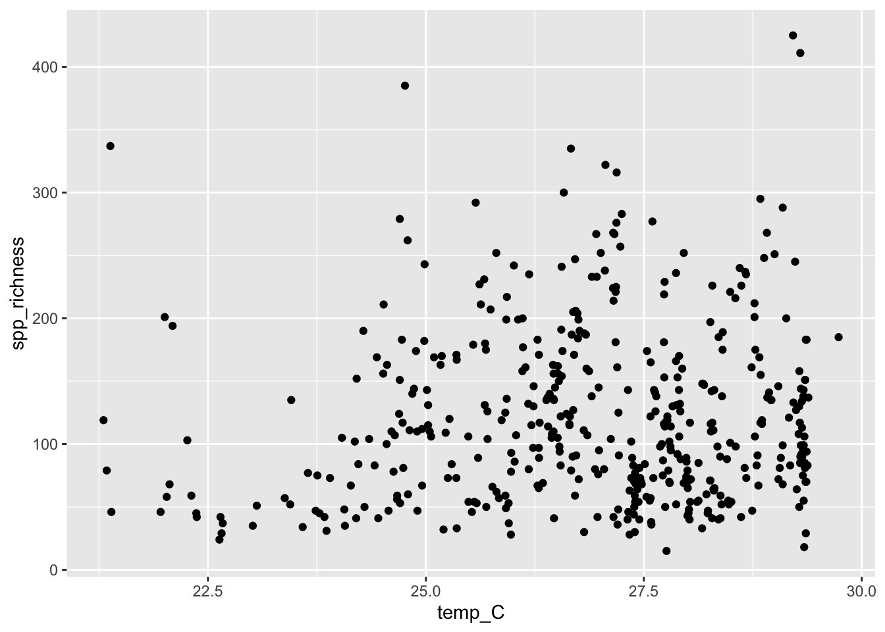
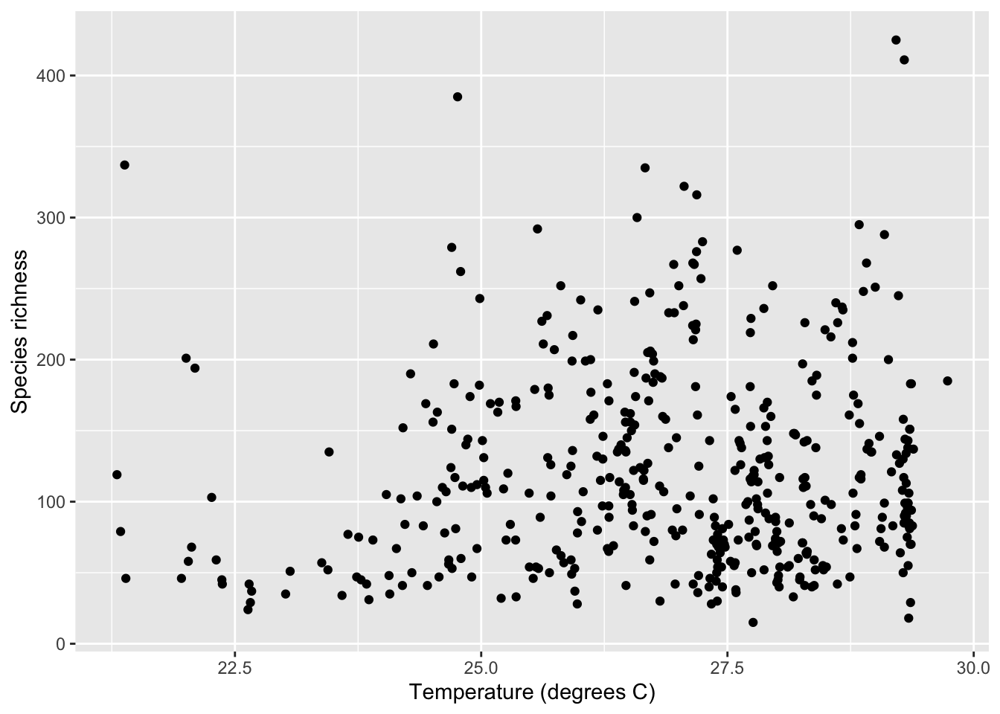

library(dplyr)
Attaching package: 'dplyr'The following objects are masked from 'package:stats':
filter, lagThe following objects are masked from 'package:base':
intersect, setdiff, setequal, unionlibrary(ggplot2)
library(readr)The function ggplot() allows us to graph most kinds of data relatively simply. Its syntax is slightly odd but very flexible. We’ll show specific commands for several types of plots below.
To begin, you’ll need to install the ggplot2 package, following instructions from last week. Once that’s done, load ggplot2 with:
library(dplyr)
Attaching package: 'dplyr'The following objects are masked from 'package:stats':
filter, lagThe following objects are masked from 'package:base':
intersect, setdiff, setequal, unionlibrary(ggplot2)
library(readr)To make a graph with ggplot(), you need to specify at least two elements in your command. The first uses the function ggplot() itself, to specify which data frame you want to use and also which variables are to be plotted. The second part tells R what kind of graph to make, using a geom function. The odd part is that these two parts are put together with a + sign. It’s simplest to see this with an example. We’ll draw a histogram with ggplot() in the next section.
Useful when:
A histogram represents the frequency distribution of a numerical variable in a sample.
Let’s see how to make a basic histogram using the age data from the Titanic data set. Make sure you have loaded the data (using read_csv()) into a data frame called titanic_data (hint: if you get an error, remember that you need to load the readr package using the library() function before read_csv() will work).
titanic_data <- read.csv("data/titanic.csv")Here’s the code to make a simple histogram of age:
ggplot(titanic_data, aes(x = age)) +
geom_histogram()Notice that there are two functions called here, put together in a single command with a + sign. You don’t have to put a line break after the + (R ignores it), but it makes the code more readable. The first function is ggplot(), and it has two input arguments. Listed first is titanic_data; this is the name of the data frame containing the variables that we want to graph. The second input to ggplot is an aes() function. In this case, the aes() function tells R that we want Age to be the \(x\)-variable (i.e. the variable that is displayed along the \(x\)-axis). The “aes” stands for “aesthetics”.
The second function in this command is geom_histogram(). This is the part that tells R that the “geometry” of our plot should be a histogram.
Running this should give a plot that look something like this:

This is not the most beautiful graph in the world, but it conveys the information. At the end of this tutorial we’ll see a couple of options that can make a ggplot graph look a little better.
Useful when:
A bar graph plots the frequency distribution of a categorical variable.
In ggplot(), the syntax for a bar graph is very similar to that for a histogram. For example, here is a bar graph for the categorical variable sex in the titanic data set:
ggplot(titanic_data, aes(x = sex)) +
geom_bar(stat = "count")Aside from specifying a different variable for \(x\), we use a different geom function here, geom_bar. The result should look like this:
Useful when:
A boxplot is a convenient way of showing the frequency distribution of a numerical variable in multiple groups. Here’s the code to draw a boxplot for age in the titanic data set, separately for each sex:
ggplot(titanic_data, aes(x = sex, y = age)) +
geom_boxplot()Notice that the \(y\) variable here is age, and \(x\) is the categorical variable sex that winds up on the \(x\)-axis. See the result below, and look at where the variables are. The other new feature here is the new geom function, geom_boxplot().

Here the thick bar in the middle of each boxplot is the median of that group. The upper and lower bounds of the box extend from the first to the third quartile. The vertical lines are called whiskers, and they cover most of the range of the data (except when data points are pretty far from the median (see text), when they are plotted as individual dots, as on the male boxplot).
Useful when:
The last graphical style that we will cover here is the scatter plot, which shows the relationship between two numerical variables.
The titanic data set does not have two numerical variables, so let’s use a different data set—the example 2.3B from p. 43 of Whitlock and Schluter, showing the relationship between the ornamentation of father guppies and the sexual attractiveness of their sons. You can load the data for that example with:
guppy_father_son_data <- read.csv("data/chap02e3bGuppyFatherSonAttractiveness.csv")To make a scatter plot of the variables fatherOrnamentation and sonAttractiveness with ggplot, you need to specify the \(x\) and \(y\) variables, and use geom_point():
# Side note: I've added a line break between arguments in ggplot()
# This has no effect on the code, but makes it easier to read IMO
ggplot(
guppy_father_son_data,
aes(x = fatherOrnamentation, y = sonAttractiveness)
) +
geom_point()The result look like this:

The code we have listed here for graphics barely scratches the surface of what ggplot2, and R as a whole, are capable of. Not only are there far more choices about the kinds of plots available, but there are many, many options for customizing the look and feel of each graph. You can choose the font, the font size, the colors, the style of the axes labels, etc., and you can customize the legends and axes legends nearly as much as you want.
Let’s dig a little deeper into just a couple of options that you can add to any of the forgoing graphs to make them look a little better. For example, you can change the text of the \(x\)-axis label or the \(y\)-axis label by using xlab() or ylab(). Let’s do that for the scatterplot, to make the labels a little nicer to read for humans.
ggplot(
guppy_father_son_data,
aes(x = fatherOrnamentation, y = sonAttractiveness)
) +
geom_point() +
xlab("Father's ornamentation") +
ylab("Son's attractiveness")The labels that we want to add are included in quotes inside the xlab() and ylab() functions. Here is what appears:

It can also be nice to remove the default gray background, to make what some feel is a cleaner graph. Try adding
+ theme_minimal()to the end of one of your lines of code making a graph, to see whether you prefer the result to the default design.
It is important to use a palette that will be clear to color blind individuals and, in some cases, to those who view a printed version in greyscale. There are bewildering array of options, but the viridis palettes accomplish these goals well (read more here. We’ll revisit the histogram example above and view the age distribution on the Titanic by sex (multiple histogram). This is a bit more advanced than what we’ve covered so far, but hang in there. We’ll go step-by-step.
The cool thing about ggplot2 is we can assign a large number of graphical features (size, color, fill, shape, line type, etc.) to variables on our data. We’ll do that using the fill = ... argument in the aes() function to make the fill of the bars dependent on sex.
ggplot(titanic_data, aes(x = age, fill = sex)) +
geom_histogram()`stat_bin()` using `bins = 30`. Pick better value with `binwidth`.Warning: Removed 680 rows containing non-finite values (`stat_bin()`).
That works, but it’s pretty ugly. For one thing, the bars are stacked on top of one another, so it’s hard to see the separate histograms for males and females. We’ll fix that by using the position = ... argument in the geom_histogram() function like this:
ggplot(titanic_data, aes(x = age, fill = sex)) +
# I will interleaves comments to explain what's going on
# position = position_identity() stops the bars from stacking
geom_histogram(position = position_identity())`stat_bin()` using `bins = 30`. Pick better value with `binwidth`.Warning: Removed 680 rows containing non-finite values (`stat_bin()`).
Well, that’s worse! Now the male bars are blocking the female bars. Let’s add a couple more arguments, making the color 50% transparent using the alpha = ... argument. I’ll also make the color around the bars black so we can see them better.
ggplot(titanic_data, aes(x = age, fill = sex)) +
# alpha = 0.5 makes bars transparent
# color = "black" adds black lines around bars
geom_histogram(alpha = 0.5, color = "black", position = position_identity())`stat_bin()` using `bins = 30`. Pick better value with `binwidth`.Warning: Removed 680 rows containing non-finite values (`stat_bin()`).
Better, but not great. Let’s use the facet_grid() function to put the histograms on separate panels. For this, we have to put sex in quotes (learning when things need to be quoted or not is frustrating).
ggplot(titanic_data, aes(x = age, fill = sex)) +
# facet_grid() makes separate panels for each sex
facet_grid(rows = "sex") +
geom_histogram(alpha = 0.5, color = "black", position = position_identity())`stat_bin()` using `bins = 30`. Pick better value with `binwidth`.Warning: Removed 680 rows containing non-finite values (`stat_bin()`).Pretty good. Now, let’s finally add the viridis palette. ggplot2 has some built in functions that you can just add using the + operator to change the color, like this:
ggplot(titanic_data, aes(x = age, fill = sex)) +
facet_grid(rows = "sex") +
geom_histogram(alpha = 0.5, color = "black", position = position_identity()) +
# This function changes the color palette
scale_fill_viridis_d()`stat_bin()` using `bins = 30`. Pick better value with `binwidth`.Warning: Removed 680 rows containing non-finite values (`stat_bin()`).
The help pages in R are the main source of help, but the amount of detail might be off-putting for beginners. For example, to explore the options for ggplot(), enter the following into the R Console.
help(ggplot)This will cause the contents of the manual page for this function to appear in the Help window in RStudio Cloud. These manual pages are often frustratingly technical. What many of us do instead is simply google the name of the function—there are a great number of resources online about R.
Let’s use the data from “countries.csv” to practice making some graphs.
read_csv(), use the correct path, and give the object a name.)library(ggplot2). Why is this necessary for the remainder of this question?measles_immunization_oneyearolds, a numerical variable. (This variable gives the percentage of 1-year-olds that have been vaccinated against measles.) Describe the pattern that you see.life_expectancy_at_birth_male and life_expectancy_at_birth_female.The ecological footprint is a widely-used measure of the impact a person has on the planet. It measures the area of land (in hectares) required to generate the food, shelter, and other resources used by a typical person and required to dispose of that person’s wastes. Larger values of the ecological footprint indicate that the typical person from that country uses more resources.
The countries data set has two variables for many countries showing the ecological footprint of an average person in each country. ecological_footprint_2000 and ecological_footprint_2012 show the ecological footprints for the years 2000 and 2012, respectively.
+ geom_abline(intercept = 0, slope = 1) to your ggplot() command. This will make it easier to see when your points are above or below the line of equivalence.)Use the countries data again. Plot the relationship between continent and female life expectancy at birth. Describe the patterns that you see.
Muchala (2006) measured the length of the tongues of eleven different species of South American bats, as well as the length of their palates (to get an indication of the size of their mouths). All of these bats use their tongues to feed on nectar from flowers. Data from the article are given in the file “BatTongues.csv”. In this file, both Tongue Length and Palette Length are given in millimeters.
summary(). You can call the data set whatever you like, but in one of the later steps we’ll assume it is called bat_tongues. Each value for tongue length and palate length is a species mean, calculated from a sample of individuals per species.filter() from the dplyr package. Use library() to load dplyr to your R session.filter() gives us the row (or rows) of a data frame that has a certain property. Looking at the graph, we can tell that the point we are interested in has a very long tongue_length, at least over 80 mm long! The following command will pull out the rows of the data frame bat_tongues that tongue_length greater than 80 mm:filter(bat_tongues, tongue_length > 80)The unusual species is Anoura fistulata (See a photo here). This species has an outrageously long tongue, which it uses to collect nectar from a particular flower (can you guess what feature of the flower has led to the evolution of such a long tongue?). See the article by Muchala (2006) to learn more about the biology of this strange bat.
Pick one of the plots you made using R today. What could be improved about this graph to make it a more effective presentation of the data?